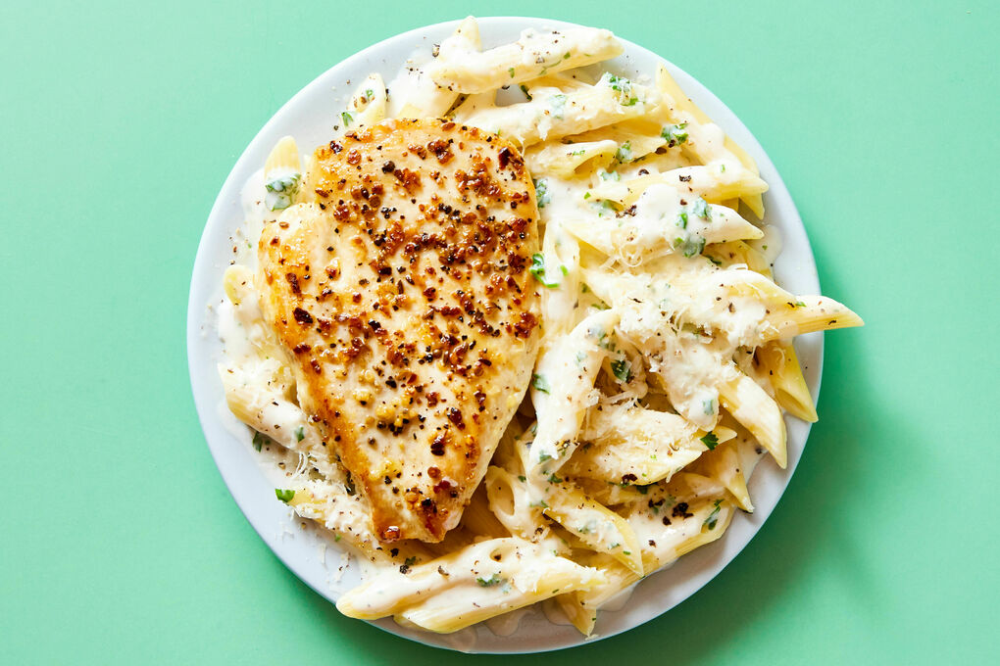

مواد لازم:
- ماکارانی پنه: یک بسته
- نمک و فلفل: به میزان لازم
- خامه: یک بسته
- سینه مرغ: دو عدد
- قارچ: پنج عدد
- شیر: یک لیوان
- آویشنبه میزان لازم
- آرد سفید: دو قاشق غذا خوری
- روغن: به میزان لازم
طرز تهیه:
مرحله اول
اول از همه نیاز داریم به دو عدد سینه مرغ که با نمک و فلفل خوب مزه دار می کنیم و روی تابه بدون روغن یا داخل فر گریل می کنیم.
مرحله دوم
بعد از درست کردن و پختن سینه مرغ ها ، آن ها را کاملا خرد می کنیم و کنار می گذاریم.
مرحله سوم
پنج عدد قارچ را خوب می شوییم و بعد از خشک شدن ، ریز و نگینی خرد می کنیم و با نمک و آویشن سرخشان می کنیم.
مرحله چهارم
پاستا پنه را با آب و نمک داخل قابلمه ای حدود سی دقیقه می جوشانی تا نرم شود و بعد داخل سبد آب کش می کنیم.
مرحله پنجم
دو قاشق غذا خوری آرد سفید را داخل تابه ای روی حرارت قرار می دهیم و بعد از این که بوی خامی آرد گرفته شد ، کمی کره یا روغن به آرد اضافه می کنیم و تفت می دهیم و یک فنجان شیر به آرد و کره اضافه می کنیم و خوب هم می زنیم و نمک و آویشن نیز اضافه می کنیم و بعد از رقیق شدن سس ، حرارت را خاموش می کنیم.
مرحله ششم
بعد قارچ های سرخ شده را به سس اضافه می کنیم و در صورت دلخواه کمی جعفری خرد شده نیز به آن اضافه می کنیم و با هم مخلوط می کنیم.
بعد سس آماده شده را به سینه مرغ گریل شده خرد شده ، اضافه می کنیم.
پاستا پنه هایی که از قبل با آب و نمک پخته بودیم و آب کش کرده بودیم را به قابلمه یا تابه اضافه می کنیم و خوب با هم مخلوط می کنیم.
مرحله هفتم
بعد دو تا سه قاشق غذا خوری خامه را با دو قاشق شیر ولرم مخلوط می کنیم تا خامه داخل غذا نَبُرد و به پاستا اضافه می کنیم و کامل با هم مخلوط می کنیم.
در صورت دلخواه می توانید دو حبه سیر را پوست کنید و له کنید و داخل مواد پاستا برای خوش عطر و طعم شدن پاستا بریزید.
در پایان پاستای خود را در ظرف دلخواه سرو کنید و نوش جان کنید.
